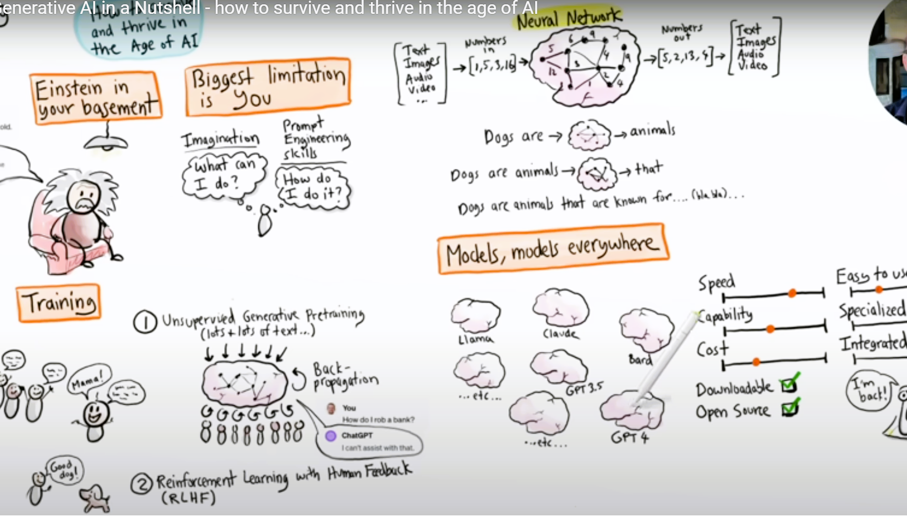

Generative AI: New Frontiers of Political Imagination
AI for International and Global Analysis
Quaid-i-Azam University, Islamabad
2025-11-04
üåç Welcome & Framing
Generative AI: New Frontiers of Political Imagination
“The best way to predict the future is to create it.”
Be comfortable with being uncomfortable.
Agenda: 90-Minute Learning Journey
- Why AI matters for Political Science, Global Affairs, and Social Sciences
- Intelligence → ML → NLP → Generative AI (clear visuals)
- LLMs: capabilities, limits, and responsible use
- Global Applications: diplomacy, development, and data-driven governance
- Hands-on prompts (üí¨ gray boxes) for active exploration
- Ethics, transparency & academic integrity
- Reflection and discussion
The New Reality
AI won’t replace analysts or scholars.
But those using AI wisely will outperform those who don’t.
Note
Why today? AI enhances judgment, scales comparative research, and compresses time-to-insight across languages and data sources.
Foundations: What is Artificial Intelligence?
Core abilities - Learn from data - Recognize patterns - Understand language - Reason over context - Make recommendations - Adapt to feedback
Tip
Simple truth: AI can analyze multilingual information faster than any researcher, finding patterns in events, policies, and communications.
From AI → ML → NLP → GenAI

üí¨ Try this Prompt
“Explain the difference between traditional AI and generative AI to a first-year social science student in 100 words.”
Traditional vs. Generative AI
| Aspect | Traditional AI (Analyzer) | Generative AI (Creator) |
|---|---|---|
| Focus | Understand & Predict | Create & Generate |
| Output | Scores, forecasts | Drafts, briefs, scenarios |
| Data | Structured | Text, images, mixed data |
| UX | Dashboards | Conversations & agents |
| Use | Prediction, classification | Ideation, writing, simulation |
NLP in Global Analysis
Capabilities - Document & treaty analysis - Translation & interpretation - Sentiment & narrative tracking - Brief generation & summarization
Applications - Policy communication - Media monitoring - Comparative analysis - Discourse mapping
Generative AI in Action
What it can do - Draft policy memos - Generate future scenarios - Translate across tone & culture - Summarize complex debates - Assist with simulation exercises
How it works - Transformer architectures - Contextual learning - Reinforcement and feedback loops - Prompt design and iteration
Large Language Models (LLMs)
Power - Multilingual comprehension - Long-context reasoning - Flexible outputs: text, charts, summaries - Knowledge transfer and refinement
Leading families - GPT, Claude, Gemini, Llama, DeepSeek
üí¨ Try this Prompt
“Create a comparative table of three global climate agreements: Kyoto, Paris, and Glasgow — include year, focus, and key outcomes.”
Tools for Scholars & Students
Research & writing - ChatGPT / Claude / Gemini - Perplexity / Elicit / Consensus - Semantic Scholar / Connected Papers
Analysis & presentation - Notion AI, DeepL, Gamma, Obsidian - Data analysis modes (text + tables)
Applications in Global Studies
Research & Insight - Literature reviews - Policy mapping & tracking - Comparative governance datasets - Narrative evolution tracking
Professional Output - Reports, briefs, speeches - Multilingual communications - Visualized evidence & summaries
Responsible Use
- Bias: Cultural, linguistic, and data bias
- Hallucinations: Fabricated or unsupported facts
- Ethics: Avoid manipulation or misinformation
- Privacy: Protect sensitive data
- Over-reliance: Maintain analytical judgment
Warning
Always verify with primary sources and document AI involvement in research.
Ethics and Academia
- Transparency — acknowledge AI support
- Attribution — cite ideas and data sources
- Verification — cross-check all claims
- Privacy — safeguard identities and records
- Balance — AI assists, humans decide
Reflection & Discussion
For Students - How does AI reshape your approach to studying politics and society?
- What human skills remain irreplaceable?
For Faculty - How can AI literacy be built into teaching and evaluation?
- What should ethical use guidelines look like?
Thank You
Thank you!
üìß zasghar@qau.edu.pk
üåê Zahid Asghar Website
“The future of analysis and diplomacy belongs to those who master AI today.”

Prof. Dr. Zahid Asghar, QAU | AI for Global Studies & Social Sciences